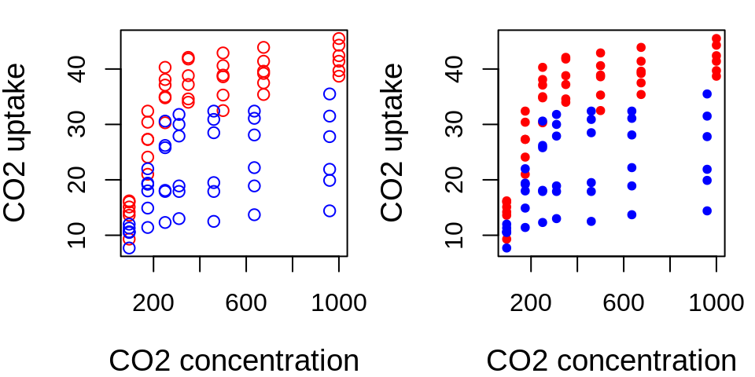

Chapter 23 Writing functions
Imagine that we would like to rescale variables to the range of 0 to 1.
# our.dataset has 4 variables
our.dataset <- data.frame(a = rnorm(10), b = rnorm(10), c = rnorm(10),
d = rnorm(10))The equation for rescaling variables into the simplex (0-1) is:
\[x_{\text{new}} = \frac{x_i - \text{min}(x)}{ \text{max}(x) - \text{min}(x)}\]
We could rescale these four variables to 0 and 1 by doing the following:
our.dataset$a <- (our.dataset$a - min(our.dataset$a, na.rm = TRUE))/(max(our.dataset$a,
na.rm = TRUE) - min(our.dataset$a, na.rm = TRUE))
our.dataset$b <- (our.dataset$b - min(our.dataset$b, na.rm = TRUE))/(max(our.dataset$b,
na.rm = TRUE) - min(our.dataset$a, na.rm = TRUE))
our.dataset$c <- (our.dataset$c - min(our.dataset$c, na.rm = TRUE))/(max(our.dataset$c,
na.rm = TRUE) - min(our.dataset$c, na.rm = TRUE))
our.dataset$d <- (our.dataset$d - min(our.dataset$d, na.rm = TRUE))/(max(our.dataset$d,
na.rm = TRUE) - min(our.dataset$d, na.rm = TRUE))What if our dataset had 31 variables?
Repeating that equation and this chunk of code 31 times could become a tedious and inneficient process:
our.dataset$a <- (our.dataset$a - min(our.dataset$a, na.rm = TRUE))/(max(our.dataset$a,
na.rm = TRUE) - min(our.dataset$a, na.rm = TRUE))But, we can see that, except from the input, the code was practically the same among the variables
The function here was deliberately hidden to not cause confusion among the participants
23.0.0.1 Why write functions?
Much of the heavy lifting in R is done by functions. They are useful for:
1- Performing a task repeatedly, but configurably;
2- Making your code more readable;
3- Make your code easier to modify and maintain;
4- Sharing code between different analyses;
5- Sharing code with other people;
6- Modifying R’s built-in functionality.
23.1 Syntax of a function: function()
function_name <- function(argument1, argument2, ...) {
body # What we want the function to do
return(values) # Optional
}function_nameis the name of the function, and will be stored in theRenvironemnt as an object with this name;arguments take the defined values that can be used within the function;bodycontains the statements that define what the function does;outputcontains the returned value from the function. Ifreturn()is absent, then the last expression is returned.
23.2 Arguments of a function()
function_name <- function(argument1, argument2, ...) {
body # What we want the function to do
return(values) # Optional
}Arguments are the input values of your function and will have the information your function needs to be able to perform correctly.
A function can have between zero and an infinity of arguments. See the following example:
operations <- function(number1, number2, number3) {
result <- (number1 + number2) * number3
print(result)
}## [1] 9Challenge 4
Using what you learned previously on flow control, create a function print_animal() that takes an animal as argument and gives the following results:
## [1] "woof"## [1] "meow"Challenge 4: Solution
Using what you learned previously on flow control, create a function print_animal() that takes an animal as argument and gives the following results:
## [1] "woof"## [1] "meow"23.3 Default argument values in a function
Arguments can be provided with a default value, or even be optional.
Default values are useful when using a function with the same settings. The flexibility to depart from default values is still there, if needed.
operations <- function(number1, number2, number3 = 3) {
result <- (number1 + number2) * number3
print(result)
}
operations(number1 = 1, number2 = 2, number3 = 3)## [1] 9## [1] 9## [1] 623.4 The ellipsis argument: ...
The special argument ... allows you to pass arguments from other undefined functions, i.e. allowing for an indefinite number of arguments inputs.
## [1] "I" "want"
## [3] "a break!"percentages <- function(x, mult = 100, ...) {
percent <- round(x * mult, ...)
paste(percent, "%", sep = "")
}## [1] "54%" "53%" "47%"## [1] "54.3%" "53.4%" "46.6%"The special argument ... allows you to pass on arguments to another function used inside your function. Here we use ... to pass on arguments to plot() and points().
plot.CO2 <- function(CO2, ...) {
plot(x = CO2$conc, y = CO2$uptake, type = "n", ...)
for (i in 1:length(CO2[, 1])) {
if (CO2$Type[i] == "Quebec") {
points(CO2$conc[i], CO2$uptake[i], col = "red", type = "p",
...)
} else if (CO2$Type[i] == "Mississippi") {
points(CO2$conc[i], CO2$uptake[i], col = "blue",
type = "p", ...)
}
}
}
23.5 Return values
The last expression evaluated in a function becomes the return value:
## [1] 0## [1] 10function() itself returns the last evaluated value even without including return()
23.6 Return values
.small[
It can be useful to explicitly return() if the routine should end early, jump out of the function and return a value.
Functions can return only a single object (and text). But this is not a limitation because you can return a list containing any number of objects.
## $result
## [1] 3
##
## $x
## [1] 1
##
## $y
## [1] 223.7 Challenge
Using what you have just learned on functions and control flow, create a function named bigsum that takes two arguments a and b and:
- Returns \(0\) if the sum of
aandbis strictly less than \(50\); - Else, returns the sum of
aandb.
Challenge 5: Solution
Using what you have just learned on functions and control flow, create a function named bigsum that takes two arguments a and b and:
- Returns
0if the sum ofaandbis strictly less than50; - Else, returns the sum of
aandb.
Answer 1
Answer 2
23.8 Accessibility of variables
It is essential to always keep in mind where your variables are, and whether they are defined and accessible:
Variables defined inside a function are not accessible outside from it!
Variables defined outside a function are accessible inside, and are not modified, even if they have the same name.
## [1] 4
## [1] 3## Error in eval(expr, envir, enclos): object 'in_val' not found## [1] 3## Error in eval(expr, envir, enclos): object 'out_val_2' not foundWhat happens in the function club, stays in the function club.
23.9 Accessibility of variables
Be very careful when creating variables inside a conditional statement as the variable may never have been created and cause (sometimes unperceptible) errors.
var1 <- 3
vartest <- function() {
a <- 4 # 'a' is defined inside
print(a) # print 'a'
print(var1) # print var1
}
a # we cannot print 'a' as it exists only inside the function## [1] 20.28356## [1] 4
## [1] 3## [1] 4## Error in print(var1): object 'var1' not foundTip It is good practice to define variables outside the conditions and then modify their values to avoid any problems.
If you had b already assigned in your environment, with a different
value, you could have had a bigger problem!
23.10 Why should I care about programming practices?
- It makes your life easier;
- It helps you achieve greater readability and makes sharing and reusing your code a lot less painful;
- It helps reduce the time you will spend remembering and understanding your own code.
Keep a clean and nice code
Proper indentation and spacing is the first step to get an easy to read
code:
- Use spaces between and after you operators
x>=1&x<=10 is more difficult to read then x >= 1 & x <= 10
- Use consistently the same assignation operator.
<- is often preferred. = is OK, but do not switch all the time between the two
Use brackets when using flow control statements:
- Inside brackets, indent by at least two spaces;
- Put closing brackets on a separate line, except when preceding an
elsestatement.
Define each variable on its own line.
Use
Cmd + IorCtrl + Iin RStudio to indent the highlighted code automatically;
This code is not spaced, and therefore hard to read. All brackets are badly aligned, and it looks “messy”.
a <- 4
b = 3
if (a < b) {
if (a == 0)
print("a zero")
} else {
if (b == 0) {
print("b zero")
} else print(b)
}On the left, code is not spaced, nor indented. All brackets are in the same line, and it looks “messy”. On the right, it looks more organized, no?
a <- 4
b <- 3
if (a < b) {
if (a == 0) {
print("a zero")
}
} else {
if (b == 0) {
print("b zero")
} else {
print(b)
}
}## [1] 323.11 Use functions to simplify your code
Write your own function: 1. When portion of the code is repeated more than a few times in your script; 2. If only a part of the code changes and includes options for different arguments.
This would also reduce the number of potential errors done by copy-pasting, and the time needed to correct them.
Let’s modify the example from Challenge 3 and suppose that all \(CO_2\) uptake from Mississipi plants was overestimated by 20 and Quebec underestimated by 50.
We could write this:
for (i in 1:length(CO2[, 1])) {
if (CO2$Type[i] == "Mississippi") {
CO2$conc[i] <- CO2$conc[i] - 20
}
}
for (i in 1:length(CO2[, 1])) {
if (CO2$Type[i] == "Quebec") {
CO2$conc[i] <- CO2$conc[i] + 50
}
}Or this:
23.12 Use meaningful names for functions
Same function as before, but with vague names:
rc <- function(c, t, b) {
for (i in 1:nrow(c)) {
if (c$Type[i] == t) {
c$uptake[i] <- c$uptake[i] + b
}
}
return(c)
}Whenever possible, avoid using names of existing R functions and variables to avoid confusion and conflits.
23.12.1 Use comments
What is c and rc?
That being said:

Whenever possible, avoid using names of existing R functions and variables to avoid confusion and conflits.
23.13 Use comments: #
.alert[Final tip]. Add comments to describe what your code does, how to use its arguments or a detailed step-by-step description of the function.
# Recalibrates the CO2 dataset by modifying the CO2 uptake
# concentration by a fixed amount depending on the region
# of sampling. Arguments CO2: the CO2 dataset type: the
# type ('Mississippi' or 'Quebec') that need to be
# recalibrated bias: the amount to add or remove to the
# concentration uptake
recalibrate <- function(CO2, type, bias) {
for (i in 1:nrow(CO2)) {
if (CO2$Type[i] == type) {
CO2$uptake[i] <- CO2$uptake[i] + bias
}
}
return(CO2)
}Challenge 6: Group exercise
Using what you learned, write an if() statement that tests whether a numeric variable x is 0. If not, it assigns \(cos(x)/x\) to z, otherwise it assigns \(1\) to z.
Create a function called my_function() that takes the variable x as argument and returns z.
If we assign \(45\), \(20\), and \(0\) to x respectively, which of the following options would represent the results?
1. \(0.054\), \(0.012\), and \(0\);
2. \(0.020\), \(0.054\), and \(1\);
3. \(0.012\), \(0.020\), and \(1\).
In addition to this, discuss with your group about a function that you would like to create (it can or it may not be related to your research). Be prepared to briefly describe it to us!
???
This exercise should take place in breakout rooms within 10 minutes. After rejoining the main room, a poll should be opened to participants. Once you obtain the response from participants, show them the correct answer and code. You may request that one of the participants explain their answer before showing the results.